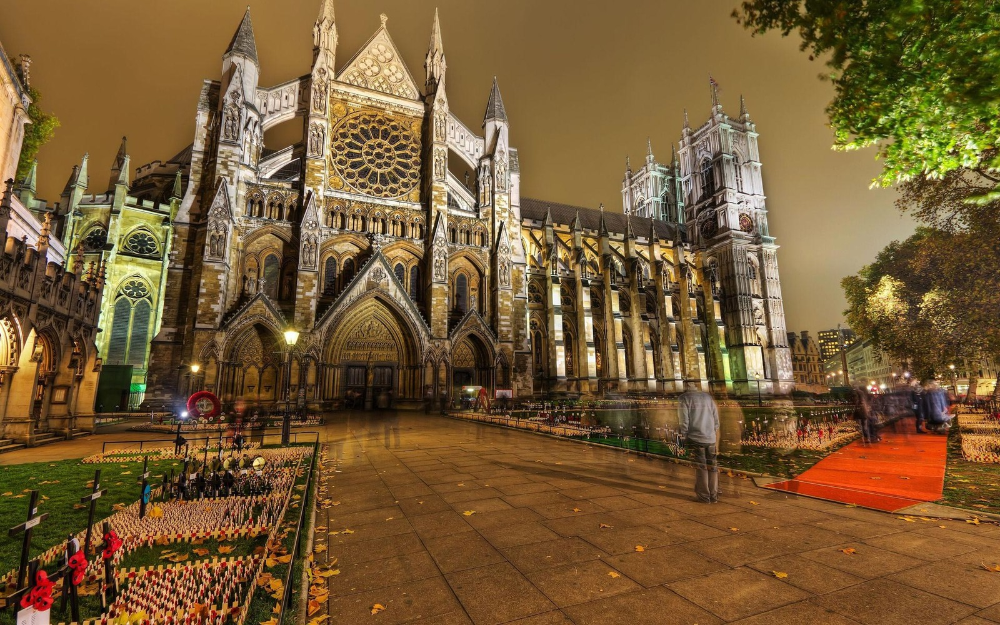
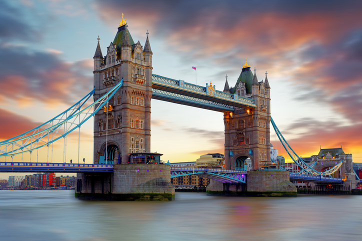

Познавательный тур в Англию от турфирмы GreatTravel
Англия привлекает оргомное количество туристов благодаря своему насыщенному историчческому прошлому и удивитльному культурному наследию. Этот тур позволит Вам прочувствовать на себе всё величие и изысканность старинных соборов и архитектурных сооружений. Продолжительность тура составляет 8 дней и 9 ночей, за это время вы успеете посмотреь главные достопримечательности страны, оценить блюда национальной кухни и значительно расширить свой кругозор в направлении мировой моды и искусства.
Программа тура
Тур расчитан на 8 дней (без учета перелета), в стоимость тура включены основные экскурсии, авиаперелет, трансферы,полноценное трехразовое питание, медицинская страховка, карта Англии на русском языке, справочник местного общественного транспорта.
1 день - Прибытие в Лондон, трансфер, размещение выбранном отеле, обзорная экскурсия по городу
2 день - Посещение Биг Бена, Трафальгарской площади и площади Пиккадили
3..4 день - Ежедневные выезды за город
5 день - Посещение Стоунхенджа
6 день - Посещение города Оксфорд
7 день - Экскурсия в Букингемский дворец, музеи и галереи (по выбору)
8 день - Трансфер в аэропорт и вылет во Владивосток в 10:24 по местному времени.
Стоимость тура - от 18 400 рублей.